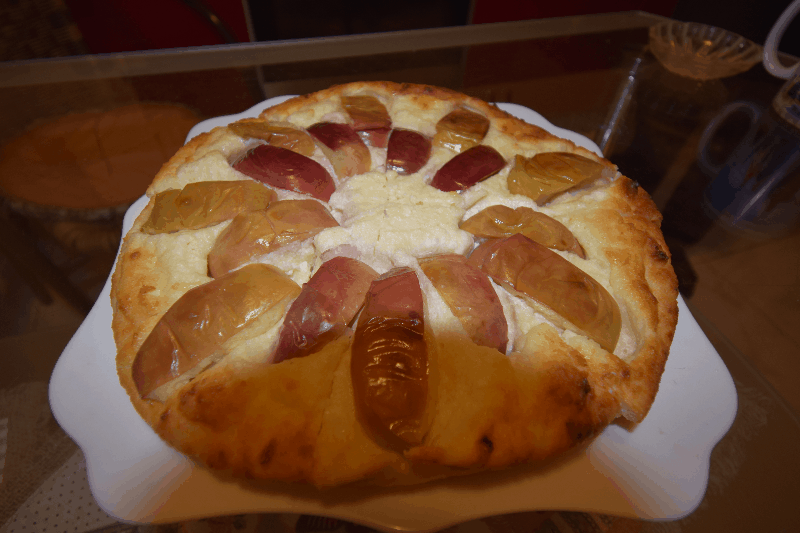

Как готовить запеканку
Ингредиенты:
- Творог (750гр.)
- Манная крупа (½ стакана)
- Сахар (½ стакана)
- 2 яйца
- Сода (⅓ чайной ложки)
- 5 гр. маргарина (или масла) для смазывания формы
- 2 яблока (по желанию)
Приготовление:

Сначала высыпаем в творог сахар, манку и соду.
Добавляем яйца.

Тщательно перемешиваем.

Выкладываем в смазанную маргарином форму.

Нарезаем яблоки дольками.

Раскладываем яблоки на творожную массу,
Немного придавливаем.

Выпекаем в духовке при температуре 200°С 40 мин.

Выкладываем на блюдо.

Готово!

(Cъедается очень быстро.)